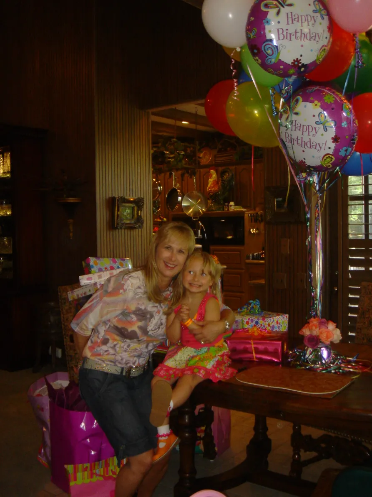
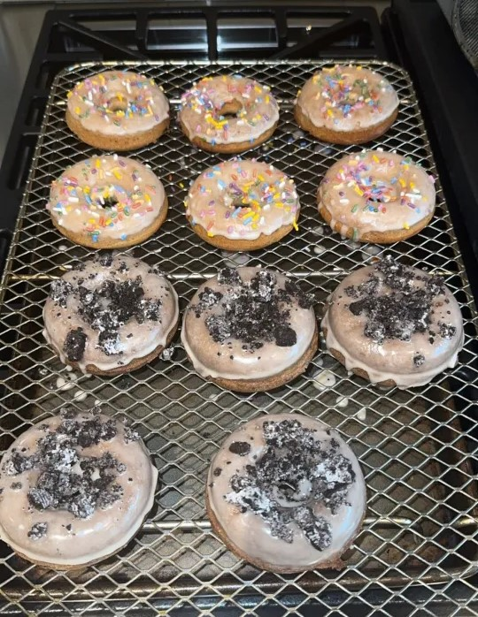
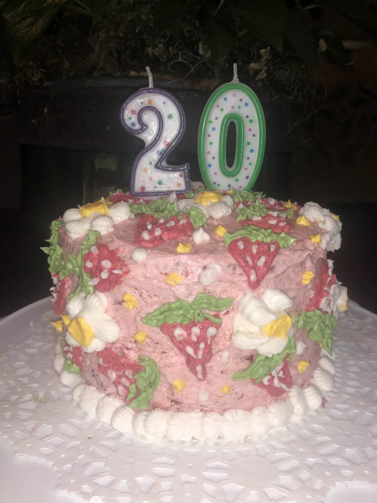

Food Allergy Awareness
But the fear changed.
I learned how to live with it. How to navigate the world safely.
Food still requires questions.
But now I know how to ask them.
Start again
I was learning survival.
Every label I read, every question I asked, every moment of caution
helped me grow up stronger.
I discovered new flavors and safe recipes.
I shared meals with friends who understood my limits.
Each bite felt like a small victory.

